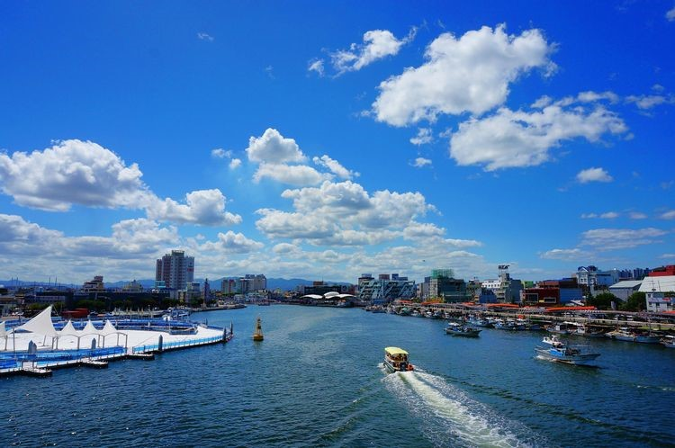

Welcome to Pohang!

City Information
- Country: South Korea
- Area: 1,127.24 km2
- Population: 497,197
- Mayor: Kang-deok Lee
Pohang is a city in the province of North Gyeongsang, South Korea
and a main seaport in the Daegu-Gyeongbuk region.
This city has the largest population of North Gyeongsang Province and
it has the third-largest land area of any city in South Korea.
Universities with graduate schools
- Pohang University of Science and Technology (POSTECH)
- Handong Global University
Lastest Updated